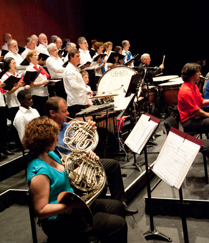

History of 2012

Home
2012
2012 was a very successful year for the orchestra. We presented three concerts, one at Riverway Arts Centre and two at the Civic Theatre. Each was well received and well patronized – a total of 1,434 patrons between the three concerts. Not only is our audience increasing but so also is the orchestra itself – we have many new players and numbered 65 or more musicians on stage at each concert. Our general membership is also increasing and perhaps reflecting this trend (and the increasing workload) we now have an enthusiastic management committee that is twelve strong.
The 2012 concert season was very varied. The March concert was conducted by our artistic director Richard McIntyre and was Russian themed – Prokopiev, Rimsky-Korsakov and Tchaikovsky. It featured Edwina George – the 2011 Australian Concerto and Vocal Competition winner as violin soloist and we also had Sebastien Lipman from Brisbane on harp.
In August we had our first concert with Mario Dobernig conducting. Mario has been rehearsing the orchestra for the last couple of days and will conduct the coming March concert and also the two musical interludes which we have for you today.
The concert last August featured Beethoven’s Emperor Concerto with Raymond Yong on piano and also the New World Symphony. It was an excellent performance, very well received by the audience who insisted on an encore.
The November concert was James Morrison Latin Fiesta. This concert was dreamed up by James Morrison and conductor Sean O’Boyle but is reworked for each performance and had previously been performed with the Queensland, Tasmanian and West Australian Orchestras. Our performance is the only one with a community orchestra. The concert was great fun for both the orchestra and the large audience. It was also particularly pleasing to welcome ten members of 1RAR band who joined us as musical partners in this performance.